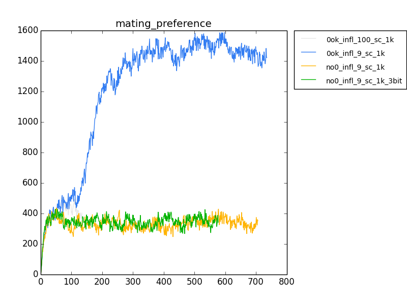
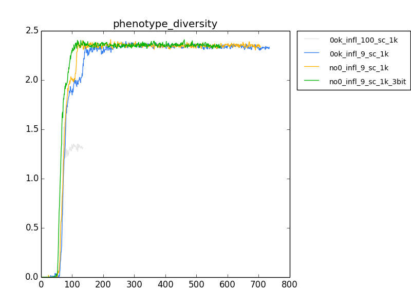
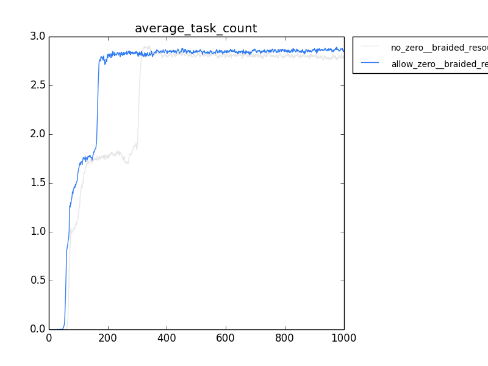
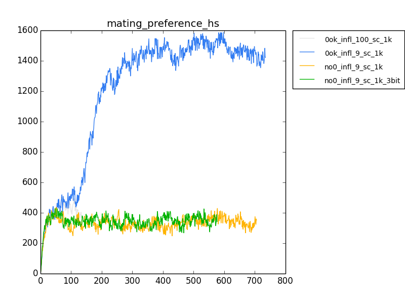
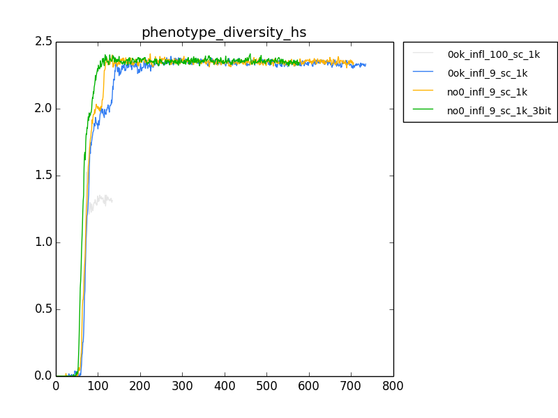
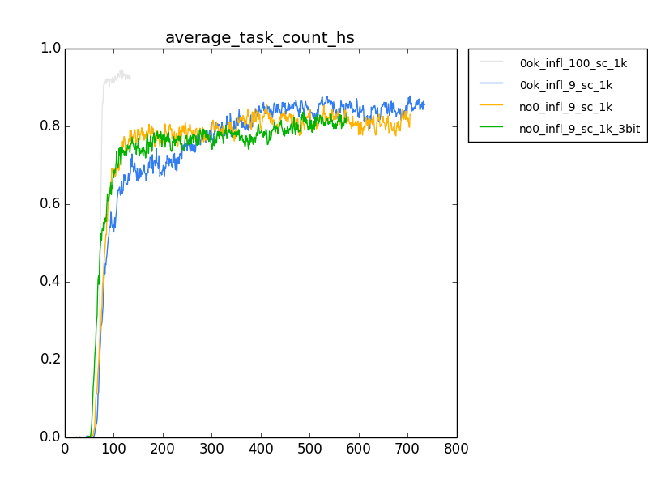
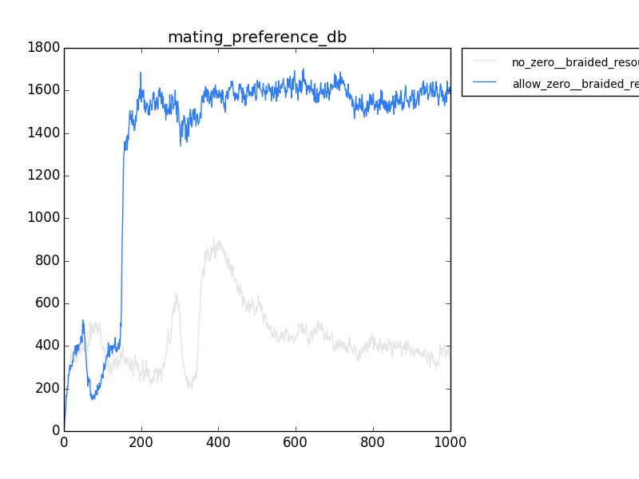
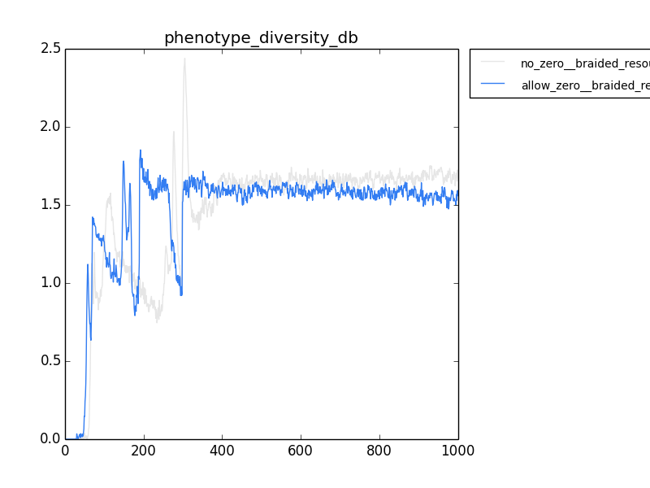
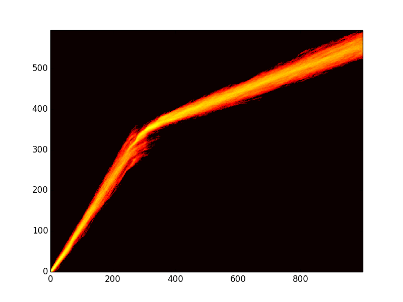
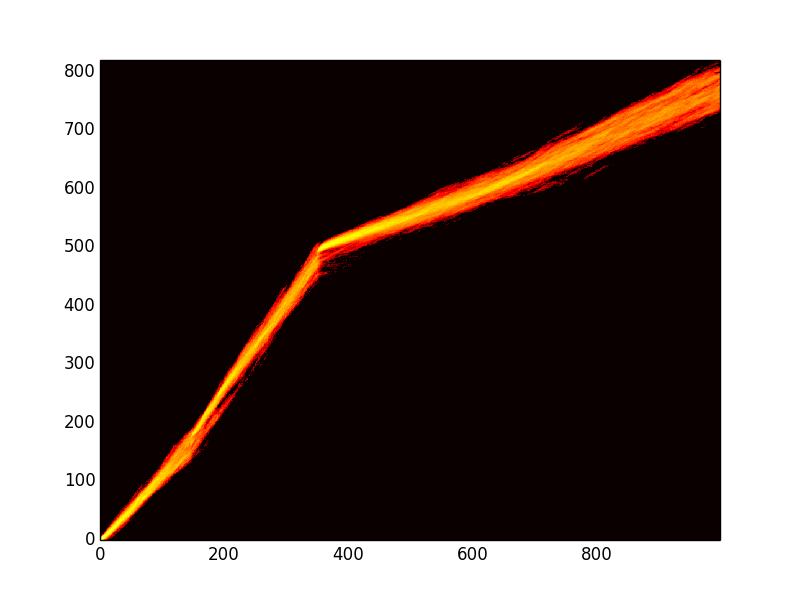

Updated Avida to not be strict with not using zeroes for target C. Then, made an environment where doing a different task is punished. So, they should specialize.
Described my issues with them not using my thingy, or only using it when it defaults to zero, and possibly not speciating, but instead doing a stochastic choice of tasks.
- Check on the speciation thing. Build up a flame graph. :/
Suggestions
- Email Matt Rupp about the braided configs for the deep branches
- Cheat. Evolve different populations using different resources. Then put them together under the ADD regime, and see if they can coexist. Use the flame graph to track the thing.
I tried a bunch of different stuff.
Here's the update so far.
exact_c_match_test
I tried a bunch of parameters for trying to get the organisms to use the thing. I tried pushing them to speciate using limited resources, and a couple of different inflows. The takeaway is that when you disallow the default zero value, they don't use it. Like, hardcore, don't use it. And, they use it even less if the resources are really limited, even if zero is allowed. So, bust.

hard_specialist
This set of experiments involves using the task switching costs built in to Avida.
Takeaway, they really don't like to fucking use it. Also, I dropped the bits to 3, instead of four, and it makes virtually no difference.
python ../../../../research_scripts/quickplot.py mating_preference_hs female_mate_preference_data.dat 11 ../data1_allow_zero_inflow_100_switching_cost_1000/ 0ok_infl_100_sc_1k female_mate_preference_data.dat 11 ../data1_allow_zero_inflow_9_switching_cost_1000/ 0ok_infl_9_sc_1k female_mate_preference_data.dat 11 ../data1_no_zero_inflow_9_switching_cost_1000 no0_infl_9_sc_1k female_mate_preference_data.dat 11 ../data1_no_zero_inflow_9_switching_cost_1000_3bits_save_detail/ no0_infl_9_sc_1k_3bit python ../../../../research_scripts/quickplot.py phenotype_diversity_hs phenotype_count.dat 3 ../data1_allow_zero_inflow_100_switching_cost_1000/ 0ok_infl_100_sc_1k phenotype_count.dat 3 ../data1_allow_zero_inflow_9_switching_cost_1000/ 0ok_infl_9_sc_1k phenotype_count.dat 3 ../data1_no_zero_inflow_9_switching_cost_1000 no0_infl_9_sc_1k phenotype_count.dat 3 ../data1_no_zero_inflow_9_switching_cost_1000_3bits_save_detail/ no0_infl_9_sc_1k_3bit python ../../../../research_scripts/quickplot.py average_task_count_hs phenotype_count.dat 6 ../data1_allow_zero_inflow_100_switching_cost_1000/ 0ok_infl_100_sc_1k phenotype_count.dat 6 ../data1_allow_zero_inflow_9_switching_cost_1000/ 0ok_infl_9_sc_1k phenotype_count.dat 6 ../data1_no_zero_inflow_9_switching_cost_1000 no0_infl_9_sc_1k phenotype_count.dat 6 ../data1_no_zero_inflow_9_switching_cost_1000_3bits_save_detail/ no0_infl_9_sc_1k_3bit

deep_branches
Takeaway, deep branches don't do it either. :/
301 python ../../../../research_scripts/quickplot.py mating_preference_db female_mate_preference_data.dat 11 ../data1_no_zero_braided_resources_no_switching_cost/ no_zero__braided_resources female_mate_preference_data.dat 11 ../data1_yes_zero_braided_resources_no_switching_cost/ allow_zero__braided_resources
302 open mating_preference_db.
303 open mating_preference_db.png
304 python ../../../../research_scripts/quickplot.py phenotype_diversity_db phenotype_count.dat 3 ../data1_no_zero_braided_resources_no_switching_cost/ no_zero__braided_resources phenotype_count.dat 3 ../data1_yes_zero_braided_resources_no_switching_cost/ allow_zero__braided_resources
305 open phenotype_diversity_db.png
306 python ../../../../research_scripts/quickplot.py average_task_count phenotype_count.dat 6 ../data1_no_zero_braided_resources_no_switching_cost/ no_zero__braided_resources phenotype_count.dat 6 ../data1_yes_zero_braided_resources_no_switching_cost/ allow_zero__braided_resources

No-zero

Allow Zero:
